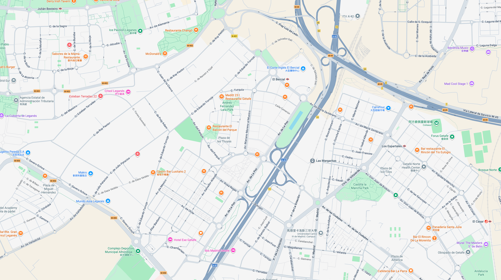

AI COCKPIT
INITIALIZING
0%

收到~！今天我来开吧，你只管补觉，路线已设定，要在常去的点顺路拿杯特浓美式吗？
全局 / Global
✏ 写入参数
环境反射强度 Env Intensity:
1.0
整体曝光 Exposure:
0.75
车漆 / Paint
车漆颜色 Color:
#fafcff
金属度 Metalness:
0.85
表面粗糙度 Roughness:
0.21
清漆层厚度 Clearcoat:
0.53
清漆粗糙度 CC Roughness:
0
反光强度 Env Map:
0.1
主光 / Sun Light
主光强度 Intensity:
4.2
主光水平位置 X:
20
主光高度 Y:
9
腰线补光 / Rim Light
补光强度 Intensity:
3.7
补光水平位置 X:
3.5
补光垂直位置 Y:
2.5
玻璃 / Glass
玻璃反射强度 Env Map:
4.7
玻璃透明度 Opacity:
0.72
玻璃磨砂度 Roughness:
0.0
前灯玻璃 / Front Lamp Glass
前灯玻璃透明度 Opacity:
0.25
前灯玻璃磨砂度 Roughness:
0.05
前灯发光色 Emissive:
#ffffff
前灯发光强度:
1.0
前灯反射 Env Map:
2.0
后灯玻璃 / Rear Lamp Glass
后灯玻璃透明度 Opacity:
0.25
后灯玻璃磨砂度 Roughness:
0.05
后灯发光色 Emissive:
#ff2020
后灯发光强度:
0
后灯反射 Env Map:
2.0
摇臂相机 / Crane Cam
距离 Distance:
11.3
俯仰角 Elevation:
1.5°
旋转 Azimuth:
126°
焦距 Focal:
59mm
半球光 / Hemisphere
天空色 Sky Color:
#ffffff
地面色 Ground Color:
#223344
半球光强度 Intensity:
2.05
场景 / Scene
背景色 Background:
#FAFDFF
地面远色 Ground Far:
#FFFFFF
地面近色 Ground Near:
#CDD2D6